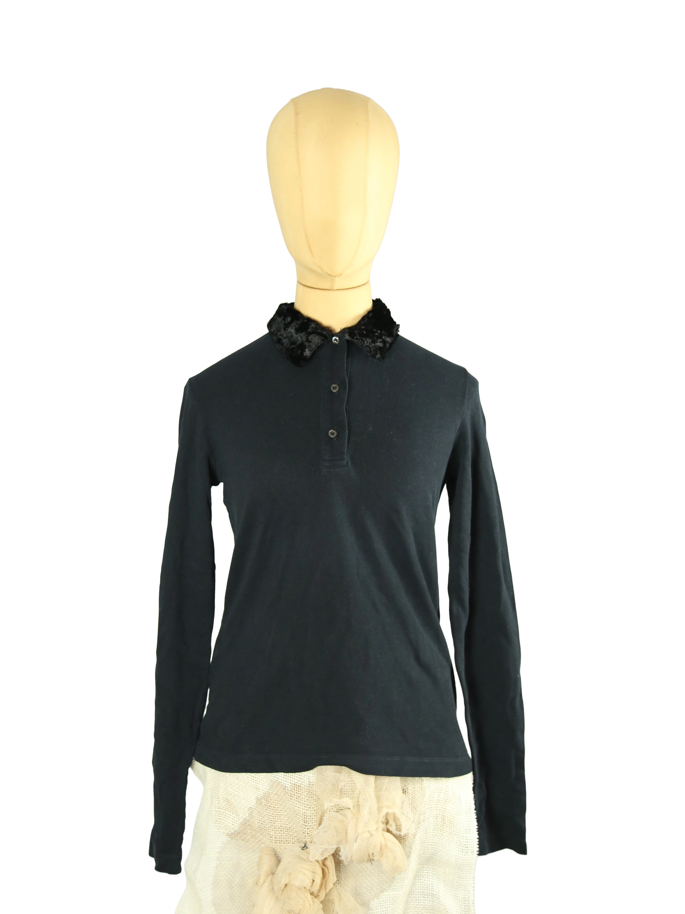

1 / 10Aus dem kuratierten Archiv von Disorder119. Dieses Prada Longsleeve zeigt einen reduzierten, präzisen Entwurf mit subtiler Raffinesse. Der schmale, klare Schnitt folgt der Körperlinie ohne einzuengen und wirkt zurückhaltend elegant. Charakteristisches Detail ist der schwarze, leicht strukturierte Kragen mit samtartiger Oberfläche, der dem ansonsten minimalistischen Shirt eine unerwartete Tiefe verleiht. Das Material liegt weich auf der Haut und eignet sich ideal für Layering oder als eigenständiges Statement. Ein typisches Prada-Stück, das Funktionalität und stilistische Zurückhaltung konsequent vereint. Details: Marke: Prada Farbe: Schwarz Größe: M Passform: Schmal bis regulär Verschluss: Knopfleiste Material: Baumwolle Herstellungsland: Italien Fotografie & Passform: Das Kleidungsstück wurde auf unserer Standard-Schneiderpuppe fotografiert, die wir zur konsistenten Darstellung aller Kleidungsstücke verwenden. Maße der Schneiderpuppe: Brustumfang 89 cm Taillenumfang 66 cm Hüftumfang 89 cm Schulterbreite 38 cm Diese Maße dienen ausschließlich der visuellen Einordnung und werden nicht als Artikelmaße bezeichnet. Zustand: Äußerlich sehr guter Zustand. Innen am Ärmel befinden sich kleine Risse im Material, die unkompliziert selbst genäht werden können. Von außen ist das Shirt vollständig intakt und optisch einwandfrei. Rechtliche Hinweise: Verkauf als gebrauchtes Kleidungsstück. Die Beschreibung erfolgt nach bestem Wissen und Gewissen. Farbnuancen und Oberflächenwirkungen können aufgrund von Lichtverhältnissen bei der Fotografie sowie unterschiedlicher Bildschirmdarstellungen leicht vom Original abweichen. Disorder119 steht für sorgfältig kuratierte Designerstücke mit Fokus auf Authentizität, Qualität und zeitlose Relevanz.
Disorder119 · Kuratiertes Archiv für Designer-, Vintage- und Contemporary-Mode. Jedes Stück wird einzeln ausgewählt, fotografiert und beschrieben.